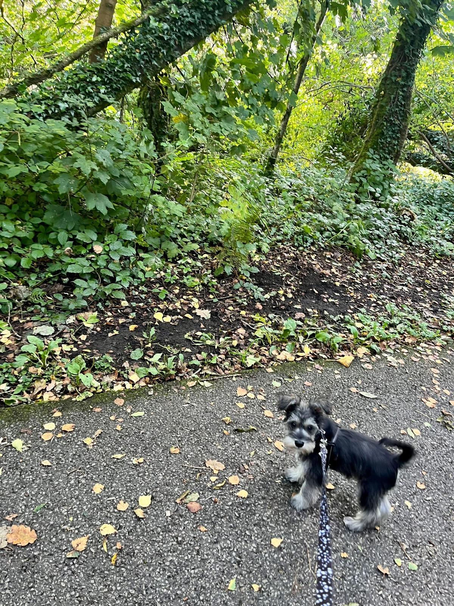
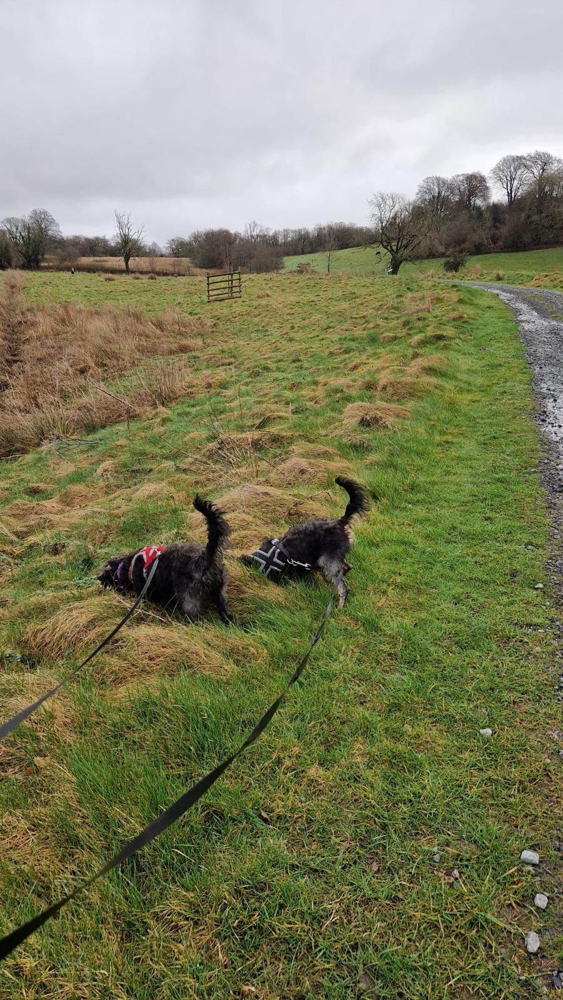
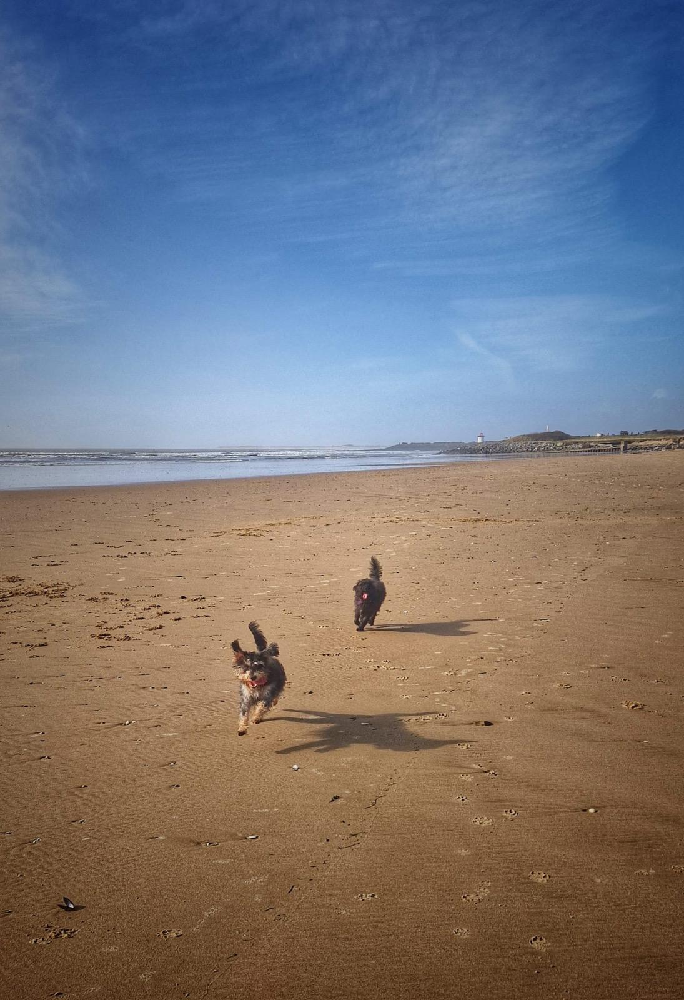

Daily Dog Walks
Regular daily walks tailored to your dog’s needs. Exercise, safety, and enjoyment are priorities — each walk is fully supervised with care and attention.
Book a WalkServing Neath, Port Talbot, Swansea & Aberdare
At Julie’s Pet Walking, I provide safe, reliable, and friendly dog walking services across Neath, Port Talbot, Swansea, Aberdare, and surrounding areas. Whether your dog needs a short walk, energetic exercise, or socialisation with other dogs, I ensure they return home happy, healthy, and well-exercised.
Regular daily walks tailored to your dog’s needs. Exercise, safety, and enjoyment are priorities — each walk is fully supervised with care and attention.
Book a Walk

Group walks provide safe socialisation with other friendly dogs under supervision. A great way for dogs to learn social skills, burn energy, and enjoy new experiences outdoors.
Learn MorePersonalised walks for senior dogs, puppies, or dogs with special needs. Relax knowing your furry friend is in safe hands, with individual care and attention.
Contact Me
Regular walks in the following dog-friendly parks, beaches, and scenic routes in South Wales:
Dog walking services across Neath, Port Talbot, Swansea, Aberdare & nearby villages.
Unsure if your area is covered? Get in touch — I’m happy to help.
As part of our commitment to pet safety, Julie’s Pet Walking partners with Welsh Town and Country Pest Services for pet-safe home pest control across South Wales. This ensures your pets are protected both during walks and at home.